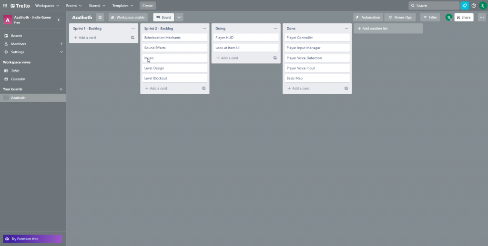

This blog will be covering my 2nd year Indie Games Development university project. In this module i have 1 year to fully develop an indie game including polishing and Q&A. My first task in this project is coming up with 3 different concepts which will then be narrowed down to the one i am making.
Game Title:
Metal Bard (working title)
Description:
An old school RPG adventure game, with rhythm based random encounters
Features/Mechanics:
-2D
-Top Down
-Rhythm
-RPG
Themes:
-Fantasy
-Rhythm
-Metal
Premise:
Pokémon style RPG where the random encounters are rhythm based. In each fight you will have to perform your combat actions to the beat.
Platform:
-PC
OneSheet:
Game Title:
Azathoth (working title)
Description:
A puzzle platformer where the player uses their voice to map their surroundings and make their way to the exit.
Features/Mechanics:
-3D
-First Person
-Puzzles
-Platforming
-Microphone / Sound Detection
Themes:
-Lovecraftian
-Puzzle
Premise:
A Lovecraftian game where the player is blind. The player must use their voice to map the surroundings and find a way out.
Platform:
-PC
OneSheet:
Game Title:
Parkour Punk (working title)
Description:
A 3D, multiplayer, parkour game where you compete against friends to get to the end of the course as fast as possible.
Features / Mechanics:
-3D
-Third Person
-Parkour
-Multiplayer
Themes:
-Parkour
-Cyberpunk
Premise:
Compete against your friends in a race through a city. Once all the players have decide on the destination its up to you to plan your route and get to the location as fast as possible all while hindering the others in the process.
Platform:
-PC
OneSheet:
After coming up with the ideas i reviewed them along side a lecturer. This was so that i could choose an idea that fits the scope of the module. The idea i landed on was Azathoth (working title). After deciding on which project i am making i began to do a MoSCoW analysis.
Key Mechanics:
-Echolocation (sound based sight)
-First Person Movement
-Examine Objects
-Puzzles
Must Have:
-First Person Movement
-Echolocation / Microphone Input
-Puzzles
-Objects to Examine
Should Have:
-Music
-Sound Effects
-UI / Menu's
-Animations
Could Have:
-Multiplayer
-Reactive Sound Effects
Would Have:
-Steam API (multiplayer)
-Discord API (discord rich presence)
Now that i have done my MoSCoW analysis, I need to plan my first sprint. Each sprint for this project will be 3 weeks long taking me up to the end of the academic year.
Note:
Documentation and research is included as part of the planned time.
Target for the next sprint:
For the next sprint I want to have a first person character that moves and detects audio. I then want that audio to affect the world in some way as a framework for later features. A basic map for testing would be good so I can test how different puzzles will work and I want the framework for some of the UI elements I will be using later.
Sprint Concern:
My main concern is with audio detection and handling as I have never done it before, however there should be some videos that explain the basics.
Player controller / Input system:
It didn't take too long to implement the player movement with the new input system however I did go through a few iterations until I got something I was happy with. My game does not need a jump so I just have basic walking with both keyboard and controller.
Player voice detection / control:
I created a script that handles taking the input from the microphone and works out the volume which can then be passed into other scripts. I'm still far away from the echolocation system I would like, however for testing i made it so that the environment lerps between 2 materials based on volume.
Basic UI elements:
I didn't manage to create any of the UI elements I wanted to, however I did start on it. The system I want it for you to be able to interact with the object you are looking at rather than just being proximity based.
I didn't know most of the code going in as I do not have the experience in Unity that I have in Unreal so everything was a bit slower, however as the project goes on I will get faster.
Devlog video:
Trello:
Notes:
Documentation and research time is included in the planned time.
Target for the next sprint:
My goal for the next sprint is to get the echolocation mechanic done as it is the core mechanic of my game. It will also take the longest to code because it deals with shaders and code I have not used before. If I can get this mechanic and the player feel for the mechanic down, the rest will be simple.
Potential issues:
The biggest potential issue is with the shaders and making the unity scene completely black / dark. Unity doesn't seem to like being completely dark, so I may need to tweak a few settings to achieve my desired effect. Learning shader code will also be fairly difficult, however once its done everything is downhill from there.
Changes made since last sprint:
The biggest change since the last sprint is the addition of a Trello which will help me visualise what needs to be done making my workflow more efficient.